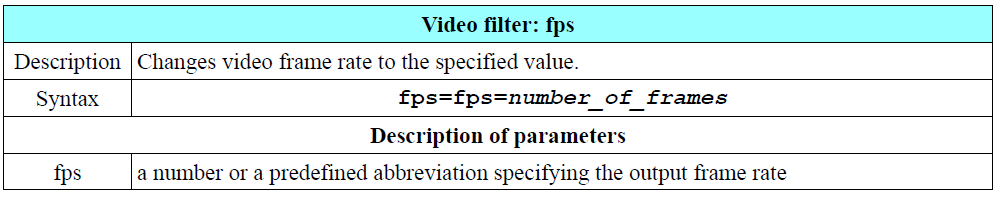
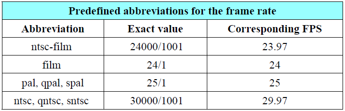
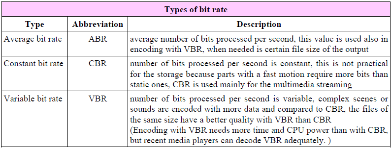

帧率（Frame rate/frequency）
- 定义：每秒编码进视频文件的帧数（fps：frames per second）。人眼看起来的连续场景最低是15FPS。
- 说明：关于fps还有一个p和i的说法，i=interlaced，即隔行扫描的；p=progressive，即逐行扫描的。说一个视频是1080p的，那它的fps就是实打实的1080，如果是1080i，那么它的fps就是1080/2=540。
- FFmpeg中的frame rate设置：
ffmpeg -i input -r fps output。使用-r命令来设置frame rate，如：ffmpeg -i input.avi -r 30 output.mp4 - 另一个设置frame rate的方法是使用fps过滤器（use an fps filter）

如：ffmpeg -i clip.mpg -vf fps=fps=25 clip.webm，是将clip.mpg文件的帧率转换为25 - 帧率预定义的值

如上图，如果要设置帧率为29.97fps，以下几条命令等效：ffmpeg -i input.avi -r 29.97 output.mpg/ffmpeg -i input.avi -r 30000/1001 output.mpg/ffmpeg -i input.avi -r ntsc output.mpg
比特率（bit/data rate）
- 定义：比特率是确定一个音视频整体质量的参数。它说明了在单位时间内处理的比特数。在FFmpeg中比特率表示为比特每秒（bits/s）

如上图，比特率分为平均比特率（ABR）、常量比特率（CBR）、可变比特率（VBR）。 - 比特率确定了编码流中1s存储了多少bit的数据，使用
-b命令去设置。为了区分视频和音频流，推荐使用-b:v或者-b:a的形式。如ffmpeg -i film.avi -b 1.5M film.mp4表示全部设置每秒比特率为1.5M。ffmpeg通常通过降低比特率并且利用先进的编解码使相应的输出文件保持非常好的质量，如ffmpeg -i input.avi -b:v 1500k output.mp4表示设置视频比特率为1500K。 - CBR：CBR的实例如在线视频，其转换数据不会被缓存。设置输出的CBR时，三个参数必须要相同：
-b、-minrate、-maxrate。设置最大最小比率的参数可以添加一个流操作符，-maxrate指令需要一个-bufsize指令（设置比率控制buffer的大小）。如ffmpeg -i in.avi -b 0.5M -minrate 0.5M -maxrate 0.5M -bufsize 1M out.mkv表示设置CBR为0.5M/s。
设置输出文件的最大大小
为了保证输出文件在确定的大小，我们使用-fs指令来指定（file size的缩写），单位是bytes字节。如ffmpeg -i in.avi -fs 10MB out.mp4表示设置输出文件最大为10MB。
文件大小计算
编码后输出文件的最终大小是音视频流的和：video_size = video_bitrate * time_in_seconds / 8，如上为视频流大小转换为字节的公式，除以8是为了将比特转换为字节。 如果音频是未压缩的，其大小计算公式为：audio_size = sampling_rate * bit_depth * channels * time_in_seconds / 8；如果音频流是压缩过的，我们需要知道其比特率去计算大小，公式为：audio_size = bitrate * time_in_seconds / 8。 例，我们来计算一个1500kbits/s视频比特率和128kbits/s音频比特率的10分钟视频的最终大小：
1 | file_size = video_size + audio_size |
实际大小稍微大于计算出的结果，因为视频文件包含一个描述音视频流排布的头信息和元数据（because included is a muxing overhead and the file metadata.）。